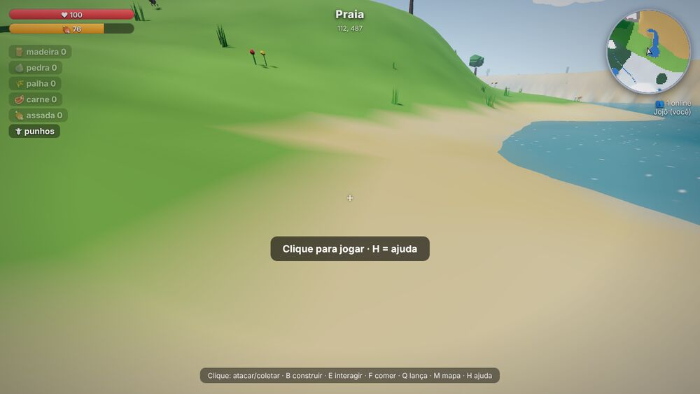
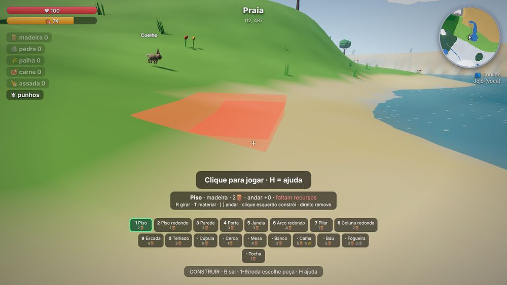

Guia rápido do jogo 3D de construção e sobrevivência, feito pelo Jojô. Explore uma ilha enorme com 14 biomas, colete recursos, construa e cuidado com os animais.
Versão solo. Neste modo você joga sozinho: o mundo roda no seu navegador e fica salvo nele. Se você apagar os dados do navegador, o mundo é apagado. Não há chat nem amigos no mesmo mundo (isso existe só na versão com servidor).
Como começar
Digite seu nome e toque em Jogar. Você nasce em uma praia.
No computador: clique na tela para prender o mouse e olhar ao redor. Esc solta o mouse.
No celular ou tablet: jogue na horizontal. O jogo entra em tela cheia ao tocar em Jogar.
Aperte H (ou ? no celular) para ver a ajuda com os controles a qualquer momento.
Controles no computador
W A S D
Andar / nadar
Shift
Correr
Espaço
Pular; na água, subir
C ou Ctrl
Mergulhar
Mouse
Olhar
V
1ª / 3ª pessoa
Clique esquerdo
Atacar ou coletar
E
Porta, cama, assar carne
F
Comer
Q
Fazer uma lança
B
Modo construir
M
Mapa
H
Ajuda
Controles no celular
Bolinha à esquerda: anda e nada. Arraste até a ponta para correr.
Arrastar a tela: olhar ao redor.
Botões da direita: atacar/coletar, pular/subir, mergulhar, E interagir, comer e construir.
No alto: câmera, mapa, fazer lança e ajuda.
Modo construir no celular: escolha a peça na barra de baixo, mire no chão e toque em ✔ para construir. Há botões para girar a peça, trocar o material, subir e descer de andar, remover e sair.
A tela do jogo
Barra vermelha: vida. Barra laranja: fome.
Lista de itens: madeira, pedra, palha, carne crua, carne assada e a arma.
Minimapa no canto: mostra os biomas ao redor.
PERIGO: um animal agressivo está caçando você.

A tela do jogo: vida, fome e itens, o bioma no alto e o minimapa no canto.

Modo construir: barra de peças embaixo e o fantasma da peça no chão.
Guia rápido da versão solo da Ilha Selvagem, baseado no manual do jogo. Jogo: queres.games/jogar/ilha-selvagem/ · O jogo está em desenvolvimento e pode mudar.
Sobrevivência
A fome cai 1 ponto a cada 5 segundos: de 100 a 0 em cerca de 8 minutos.
Com fome acima de 40, a vida se recupera sozinha.
Com fome em 0, você perde vida a cada 5 segundos.
Carne assada: +40 de fome e +12 de vida.
Carne crua: +16 de fome, com 30% de chance de perder 8 de vida.
Para assar, chegue perto de uma fogueira e aperte E. Para comer, F.
Se a vida chegar a 0, você renasce em uns 4 segundos, na sua cama ou na praia. Você não perde os itens.
Ao entrar e ao renascer, você fica uns 20 a 25 segundos protegido de animais.
Um dia dura 10 minutos reais. À noite aparecem mais animais agressivos.
Coletar recursos
Recurso
De onde vem
Golpes
Rende
Madeira
Árvores
4
3 a 5
Pedra
Rochas
5
2 a 4
Palha
Capim, junco, mato seco
1
1 a 2
O que você coleta volta a crescer depois de 2 minutos e meio. A lança (Q, custa 3 madeira + 2 pedra) causa 24 de dano; os punhos causam 9.
Construção
Aperte B para entrar no modo construir.
Escolha a peça (1–9, 0 ou roda do mouse) e o material (T: madeira, pedra, palha).
Mire no chão: o fantasma verde pode construir; vermelho não pode (o motivo aparece na tela).
R gira a peça. Clique esquerdo constrói. Clique direito ou X remove (devolve metade do custo).
[ ] mudam o andar (cada andar tem 3 m).
As peças se encaixam sozinhas numa grade de 4 por 4 metros.
Peça
Custo
Piso, piso redondo
2
Parede, porta, janela
3
Arco redondo, escada
4
Pilar, cerca
1
Coluna redonda
2
Telhado
3
Cúpula
6
Mesa 4, banco 3, baú 5
madeira
Cama
5 madeira + 4 palha
Fogueira
3 madeira + 2 pedra
Tocha
1 madeira
A cama define onde você renasce (aperte E perto dela). Paredes, cerca e porta fechada bloqueiam os animais: uma casa é um abrigo.
Animais
O nome do animal aparece acima dele: branco = passivoamarelo = neutrovermelho = agressivo
Agressivos (caçam você): lobo (em bando), onça, jacaré, cobra, escorpião e tubarão (só na água).
Dicas: faça uma lança logo. Corra: lobo, javali e urso são mais lentos que você correndo, mas a onça e o tubarão são mais rápidos. Animais de terra não entram na água funda. Evite o mar fundo, onde vive o tubarão.
Biomas
14 biomas: praia, planície, floresta, selva, pântano, deserto, taiga, tundra gelada, montanha, pico nevado, lago/rio, recife de corais, mar e mar profundo. O norte do mapa é mais frio e o sul mais quente. Aperte M para ver o mapa.
Sua primeira hora
Colete pelo menos 10 madeira e 5 pedra.
Faça a lança (Q) e uma fogueira.
Cace um coelho ou cervo e asse a carne na fogueira.
Construa uma casa pequena (1 piso, 4 paredes, 1 porta, 1 telhado: cerca de 20 de material) e coloque uma cama dentro.
Antes de escurecer, volte para casa, acenda tochas e feche a porta.